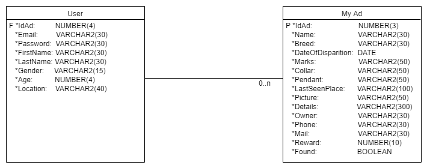
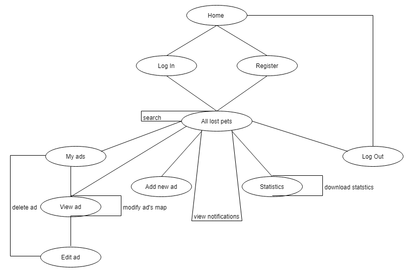
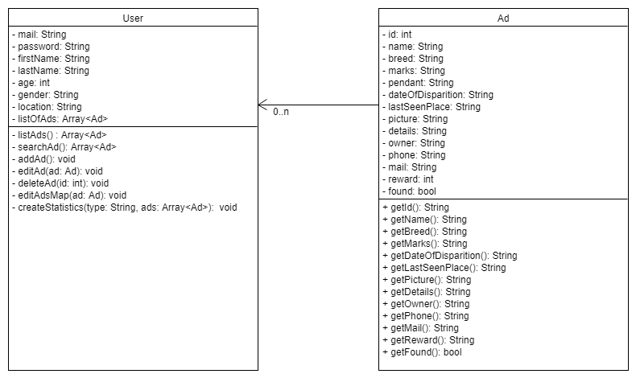
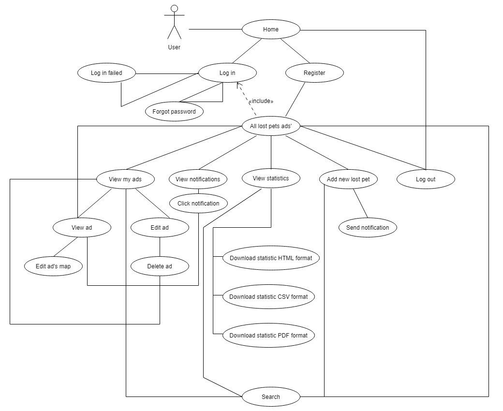

Lost Pets Web Project
Cuprins:
1) Introducere
Ti-ai pierdut animalutul in timp ce ai intrat pana la magazin? Nu mai e nevoie sa faci anunturi si sa lipesti tot cartierul. Noi venim in ajutorul tau cu o noua aplicatie. Nu e nimic mai usor. Trebuie doar sa intri pe site-ul nostru, sa trimiti intr-un formular toate informatiile despre el si ultimele poze cu el, dar si cel mai important, locatia unde l-ai vazut ultima oara. Cu ajutorul nostru toate persoanele din apropierea locatiei trimise de tine si care folosesc aplicatia noastra vor primi o notificare. Acestia vor putea schimba locatia exacta daca l-au vazut. Vei vedea conform statisticilor noastre care sunt zonele cu cele mai des pierdute animale,dar si care sunt recompensele din ultima perioada. Bineinteles, vei putea vedea si cat de utila este aplicatia noastra pentru voi!2) Tehnologii utilizate
Pentru implementare proiectului vom folosi HyperText Transfer Protocol bazat pe stiva de protocoale TCP/IP , un protocol fiabil de tip cerere/raspuns ce foloseste ca port standard de acces, portul 80. Focalizat asupra performantei, HTTP/2.0 este dezvoltat din varianta 1.1 , fiind standardizat si introdus pe majoritatea browserelor in anul 2015. Pentru stilizarea experientei utilizatorului vom folosi Cascading Style Sheets cu ultima sa versiune. O altă tehnologie utilizată vor fi bazele de date MySQL . Acestea reprezină o modalitate de stocare a unor informații și date pe un suport extern ( un dispozitiv de stocare), cu posibilitatea extinderii ușoare și a regăsirii rapide a acestora. Tot o baza de date dar geografica este OpenStreetMap care va pastra locatia animalului. Interfata Web va consta din incarcarea in paginile HTML a elementelor de design din CSS , sustinute de arhitectura in limbajul PHP. Pentru Pentru statistici vom utiliza biblioteca Chart.JS care vor putea fi descarcate in diverse formate(HTML,PDF,SVG).
3) Arhitectura
Aplicația va folosi o arhitectură de tipul CLIENT/SERVER TCP concurent. Serverul va primi cererile de conectari de la clienți,după care va oferi acestora posibilitatea de a se loga sau de a se înregistra. Dacă logarea eșuează, clientului i se va propune încercarea de reconectare către server sau de a se înregistra . La înregistrare, se va verifica dacă clientul cu același nume nu există deja în baza de date, și în caz că nu , datele acestuia vor fi adăugate în baza de date. După înregistrare, clientul se poate loga ,iar daca logarea se termina cu succes se va accesa pagina de anunturi.
Pe pagina Anunturi se regasesc toate anunturile postate pana la momentul actual in ordine descrescatoare cronologica. In cadrul paginii de anunt vom putea adauga un anunt cu informatii obligatorii cat si optionale, precum si locul in care a fost vazut animalul de companie pierdut. Pagina de statistici contine statistici referitoare la rata de succes a siteului nostru, media recompenselor in functie de perioada, zonele cele mai afectate de pierderi si cum s-au pierdut.
Ca model arhitectural vom folosi MVC pentru o mai buna modularizare a aplicatiei. Modelul MVC separa partea de stocare a datelor(baza de date),de modul de prezentare al datelor(HTML,CSS,imagini) si de prelucrarea informatiei.
Model-ul se ocupa de comportarea si datele aplicatiei; raspunde la cereri despre starea sistemului, la cereri de schimbare de stare si notifica utilizatorul
atunci cand aceste schimbari au avut loc pentru ca acesta sa poata reactiona.
View-ul transpune model-ul intr-o forma care permite o interactionare usoara, in mod tipic o interfata vizuala.
Controller-ul primeste input de la utilizator si initiaza un raspuns in urma cererilor catre obiectele model. Controller-ul este cel care controleaza celelalte doua clase de obiecte, view si model, instructandu-le sa execute operatii pe baza input-ului primit de la utilizator.

4) Detalii De implementare
Dupa accesarea adresei , va aparea meniul de login . Odata ce datele au fost introduse in meniul de login , se va face o interogare in baza de date daca userul exista,iar daca nu se returneaza nici un row la introducerea datelor,se va semnala o eroare . In caz contrar, userul va fi redirectionat catre pagina de meniu.
4.1 Diagrame

Baza de date
Flow
POO
Diagrama Usecase4.2 Interfata actuala


5)Actori si obiective
Utilizatorul: doreste gasirea animalului de companie pierdut cat mai repede
Clientul (Browser-ul): sa ofere o modalitate user-friendly de a vizualiza si accesa aplicatia si toate specificatiile acestei.
Serverul: sa gestioneze informatiile din baza de date conform cerintelor necesare.
Administratorul: să întrețină baza de date.
6)Scenarii de utilizare
Următoarele cazuri descriu modul în care lucreaza aplicatia si ce poate ea oferi utilizatorilor:
1. Inregistrarea in aplicatie
1.1. Obiectiv / Context
1.Mai multi utilizatori se pot inregistra pe site, fiecare avand contul lui si date lui personale.
1.2. Scenariu / Pași
1. Utilizatorul va intra pe pagina web a aplicatiei, i se va prezenta pagina de start si apoi va apasa pe butonul de signup.
2. Va fi trimis in pagina de inregistrare, unde i se vor cere informatii despre acesta.
3. Dupa apasarea butonului de submit, datele vor fi transmise in baza de date, urmAnd ca acesta sa se autentifice cu ele.
4. Va fi trimis in pagina de autentificare, unde se va loga folosind contul si parola.
5. Dupa aceasta, va intra in contul sau si va putea interactiona complet cu aplicatia.
1.3. Extensii
1. Daca datele primite exista deja in baza de date, acestea nu vor fi preluate si utilizatorul va fi redirectionat inapoi in pagina de inregistrare, cu un mesaj precum “campul x este deja existent”.
2. Autentificarea in aplicatie
2.1. Obiectiv / Context
Utilizatorul se autentifica cu informatiile din baza de date. Acesta dupa va putea folosi fiecare camp oferit de aplicatie.
2.2. Scenariu / Pași
1. Utilizatorul va intra pe pagina web a aplicatiei, i se va oferi pagina de start si apoi va apasa pe butonul de login.
2. Va fi trimis in pagina de autentificare, unde se va loga folosind contul si parola valida si specifica acestuia.
3. Dupa aceasta, va intra in contul sau si va putea interactiona complet cu aplicatia.
3.3. Extensii
1. In cazul unor informatii eronate, utilizatorul va trebui sa ofere din nou alt cont sau parola.
3.Adaugarea unui anunt
3.1. Obiectiv / Context
1.Utilizatorul, odata autentificat in aplicatie, isi va putea adauga anuntul dorit.
3.2. Scenariu / Pași
1. Utilizatorul, in partea de Anuntul meu, isi adauga anuntul cu animalul pierdut.
2. Acesta poate sa-si adauge informatii obligatorii(Nume,observatii specifice,poza,locatia ultimei vizualizari) si optionale (varsta,boli,recompensa,etc).
3. Are acces la anuntul sau si poate sa il editeze (sa adauge sau sa stearga informatii).
3.3. Extensii
2. Utilizatorul va primi un mesaj de avertizare in cazul in care informatiile obligatoriile nu au fost adaugate.
4. Notificarea cu anunturi noi sau actualizate
4.1. Obiectiv / Context
1.Utilizatorul primeste notificari de la aplicatia web in momentul cand se afla in raza locatiei unui animal pierdut.
4.2. Scenariu / Pași
1. Utilizatorul primeste o notificare pe web in timp ce isi schimba locatia si intra in raza unui animal pierdut sau un alt utilizator a adaugat un anunt in raza sa.
2. Dupa apasare, se redirectineaza catre o pagina in care utilizatorul va putea vedea anuntul adaugat despre animalul pierdut.
3. Utilizatorul notificat daca observa animalul pierdut poate modifica locatia ultimei vizualizari a animalului.
4. Toti utilizatorii din raza noii locatii vor fi notificati.
4.3. Extensii
1a. Daca un utilizator va schimba locatia,anuntul va fi actualizat.
5. Vizualizarea tututor anunturilor
5.1. Obiectiv / Context
Utilizatorul poate vizualiza toate anunturile in ordine cronologica a ultimei vizualizari a animalului pierdut.
5.2. Scenariu / Pași
1. Utilizatorul vede toate anunturile
2. Utilizatorul alege unul si apasand se va redirectiona pe o pagina unde poate vedea toate informatiile despre anuntul dorit.
3. Utilizatorul poate vedea toate anunturile in ordine cronologica
5.3. Extensii
1a. Daca un utilizator va schimba locatia,anuntul va fi actualizat in lista de anunturi.
6. Statisticile anunturilor
6.1. Obiectiv / Context
Utilizatorul poate solicita un raport al anunturilor in functie de cazul disparitiei,rata de recuperare,recompense si zone vulnerabile in format HTML,PDF si SVG.
6.2. Scenariu / Pași
1. Utilizatorul are la indemana in sectiunea de Statistici un meniu in care poate descarca pentru fiecare "problema" in cele 3 formate disponibile.
3. Dupa selectare serverul proceseaza toate informatiile din baza de date si le distribuie in formatul dorit.
6.3. Extensii
1a. Pe langa problema se vor stabili si perioada pe care utilizatorul doreste sa le aiba in raport.
2a. Serverul salveaza in baza de date, data la care a fost cerut fiecare raport.
6) Concluzii
Aplicatia va respecta toate cerintele mentionate la informatii. Cu toate acestea, vom putea include si cateva lucruri suplimentare. Fiecare utilizator , va avea un cont. Acest cont va retine toate anunturile userului ,dar si ale celorlalti utilizatori.